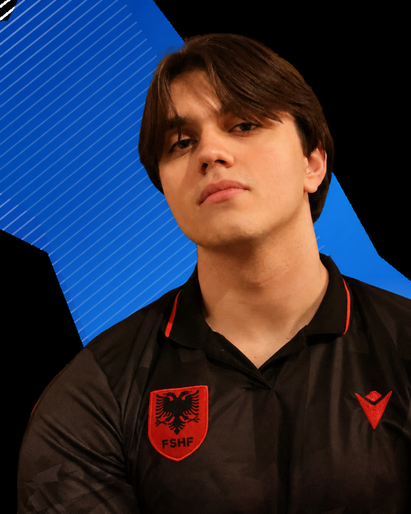

Host
Our podcast covers football matches around the world, reviews tactical breakdowns, and captures the cultures that surround the game.
Episode
About Tiki-Taka Tiki-Talk
We are an international soccer podcast built on fan interaction, live streaming, and the chaos of the sport we all obsess over. From GOAT debates to Champions League drama, and from unboxing collectibles to live watch along parties, we cover the biggest moments in football with energy and personality. Smart takes, good vibes, and fútbol culture all in one place.

The Hosts
The people driving the debates, reactions, and culture around every Tiki-Taka Tiki-Talk episode.
Host

Host
Contact Us
Contact us to do signature match events, fan festivals, and watch along parties with merch, collectibles, and collabs.
Live podcast tapings, fan meetups, tournament nights, sponsor activations, and soccer culture pop-ups.
Hosted match reactions, derby day hangouts, World Cup watch rooms, and streaming-friendly fan coverage.
Limited drops, collab apparel, custom show goods, and matchday bundles for listeners and partners.
Sticker drops, trading cards, swaps, giveaway inserts, and collectible ideas built for the real football faithful.
Players, creators, local clubs, collectors, superfans, and analysts who can add voice to the show.
Brand partnerships, social content, venue nights, prediction games, and new ideas around the global game.
Let's Build It
Use this form to contact us for bookings, collaborations, merch inquiries, sticker drops, sponsor ideas, guest pitches, and anything else that belongs in the Tiki-Talk universe.